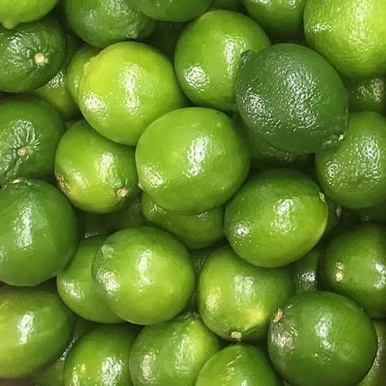
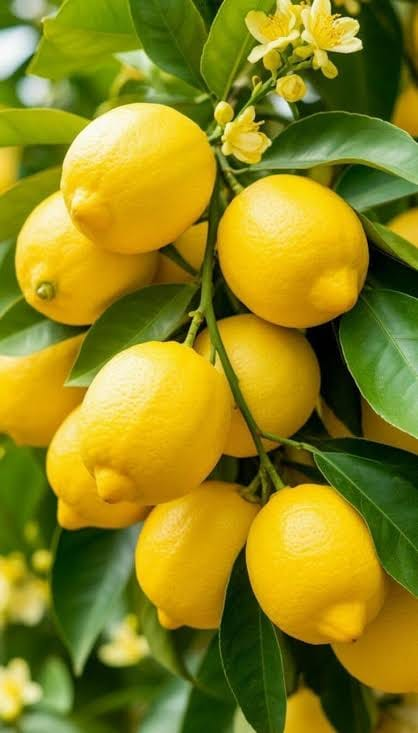
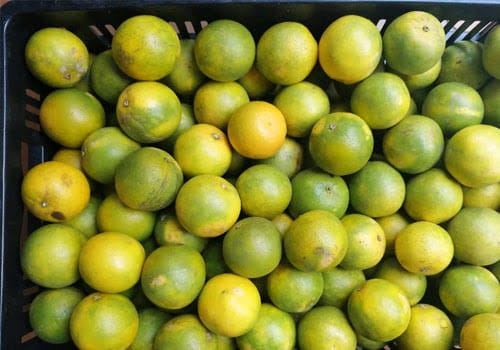
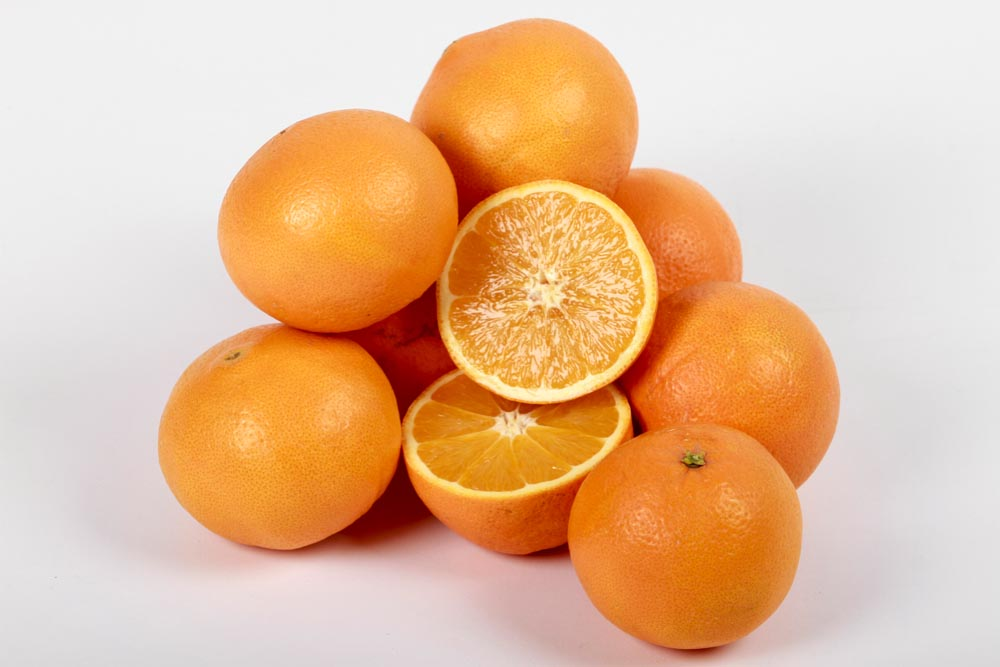

Frutas Frescas Seleccionadas
Cultivadas bajo estándares agronómicos que aseguran cáscara uniforme, alto porcentaje de jugo y excelente durabilidad.

Sin Semilla Exportación🍋 Limón Tahití (Persa)
Citrus latifoliaCítrico de color verde esmeralda intenso, cáscara lisa o ligeramente rugosa y pulpa extraordinariamente jugosa sin semillas. Es la variedad más demandada a nivel internacional por su balance de acidez y frescura aromática.
- Rendimiento de Jugo: Mínimo 45%
- Grados Brix: 7.0° - 8.5°
- Color de Cáscara: Verde uniforme a verde claro
- Vida Útil: Hasta 30 días a 8°C - 10°C

Aroma Intenso Gourmet🍋 Limón Amarillo Eureka
Citrus limonVariedad de cáscara amarilla brillante y gruesa rica en aceites esenciales. Posee un sabor ácido pronunciado muy cotizado en repostería fina, coctelería internacional y aderezos gourmet.
- Rendimiento de Jugo: Mínimo 35%
- Acidez Cítrica: 5.0% - 6.5%
- Grosor de Cáscara: 4mm - 6mm (ideal para ralladura)
- Presentación: Caja 18 kg / Malla 1 kg

Extra Jugosa Agroindustria🍊 Naranja Valencia
Citrus sinensis (L.) OsbeckConsiderada la reina de las naranjas para extracción de jugo por su vibrante color anaranjado, exquisita dulzura natural y alta concentración de líquidos. Excelente resistencia al transporte de larga distancia.
- Grados Brix: 10.0° - 12.5° (Alto dulzor)
- Rendimiento de Jugo: Superior al 50%
- Relación Ratio: Brix/Ácido equilibrado (9:1)
- Calibres Populares: Calibre 2, 3 y 4

Sabor Tradicional Consumo Fresco🍊 Naranja Criolla Dulce
Citrus sinensis var. localFruta tradicional del mercado nacional con cáscara delgada, pulpa suave y fácil de pelar. Ideal para consumo directo en hogares, comedores escolares e iniciativas de alimentación saludable.
- Grados Brix: 9.5° - 11.0°
- Textura de Pulpa: Tierna y refrescante
- Cáscara: Fácil desprendimiento manual
- Presentación: Mallas de 2 kg / Canastilla 20 kg
Tipos de Empacado Profesional
En MERLET cuidamos cada detalle del embalaje para proteger la integridad física de la fruta, mantener la ventilación correcta y maximizar la vida en anaquel.
Caja Telescópica de Exportación
Fabricada en cartón corrugado de alta resistencia con perforaciones de ventilación cruzada para evitar la condensación y soportar el apilado en estibas marítimas.
Capacidad: 4.5 kg & 18.0 kg (40 lbs)Malla Extruida Biodegradable
Presentación retail lista para góndola en supermercados. Permite la visibilidad completa del producto y garantiza la respiración natural del cítrico.
Capacidad: 1.0 kg, 2.0 kg y 3.0 kgCanastilla Plástica Agroindustrial
Canastillas lavables y reutilizables de grado alimentario, diseñadas para distribución mayorista rápida y traslados seguros desde el centro de acopio.
Capacidad: 20 kg a 25 kgTratamiento y Encerado Natural
Aplicación de recubrimiento a base de ceras de carnauba 100% vegetales que sellan los poros de la cáscara, previenen deshidratación y realzan el brillo.
Certificación de Grado AlimentarioClasificación por Tamaños y Calibres
Los cítricos se clasifican por su diámetro ecuatorial (mm) y conteo de piezas por caja, asegurando homogeneidad en cada entrega comercial.
🍋 Clasificación de Limón Tahití (Caja 4.5 kg / 18 kg)
| Calibre Comercial | Diámetro Ecuatorial (mm) | Peso Promedio por Fruta | Unidades aprox. por Caja 4.5kg | Destino Principal |
|---|---|---|---|---|
| Calibre 110 (Grande) | 61 mm - 67 mm | 100 g - 120 g | 38 - 42 piezas | Exportación / Gourmet |
| Calibre 150 (Mediano-Grande) | 56 mm - 62 mm | 85 g - 98 g | 48 - 52 piezas | Exportación Estándar |
| Calibre 175 (Mediano) | 53 mm - 58 mm | 75 g - 84 g | 58 - 62 piezas | Exportación / Retail |
| Calibre 200 (Estándar) | 49 mm - 54 mm | 65 g - 74 g | 68 - 72 piezas | Mercado Nacional & Retail |
| Calibre 230 / 250 (Pequeño) | 45 mm - 49 mm | 50 g - 62 g | 78 - 85 piezas | Industria de Jugos |
🍊 Clasificación de Naranjas Valencia
| Calibre | Diámetro Ecuatorial (mm) | Peso Estimado (g) | Uso Recomendado | Tipo de Mercado |
|---|---|---|---|---|
| Calibre 1 - Extra Grande | 84 mm - 92 mm | 260 g - 320 g | Consumo de Mesa Premium | Exportación |
| Calibre 2 - Grande | 77 mm - 84 mm | 210 g - 255 g | Supermercados y Canastas de Fruta | Nacional & Exportación |
| Calibre 3 - Mediano | 70 mm - 77 mm | 170 g - 205 g | Puntos de Venta y Fruterías | Mercado Nacional |
| Calibre 4 / 5 - Estándar Jugo | 64 mm - 70 mm | 135 g - 165 g | Extracción Automática de Jugo | Agroindustria & Hostelería |